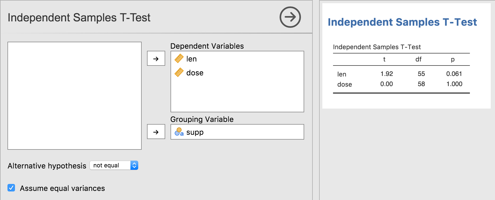
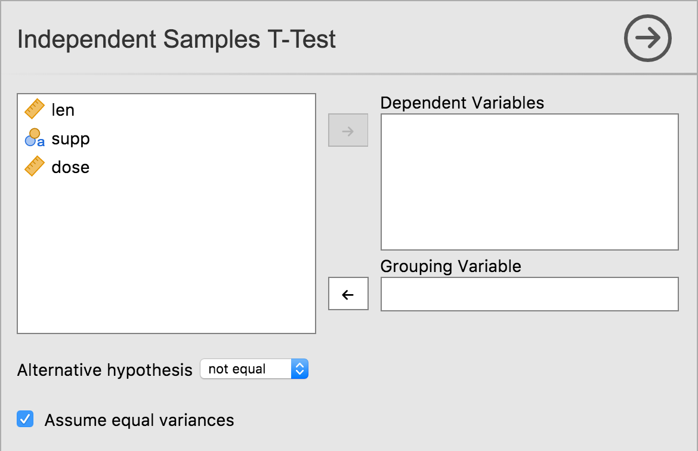
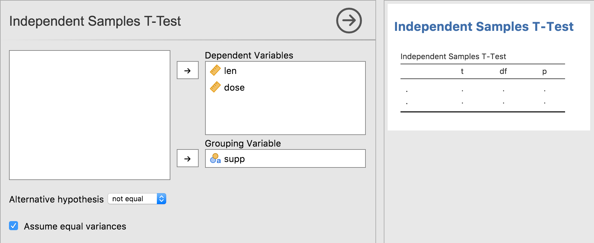
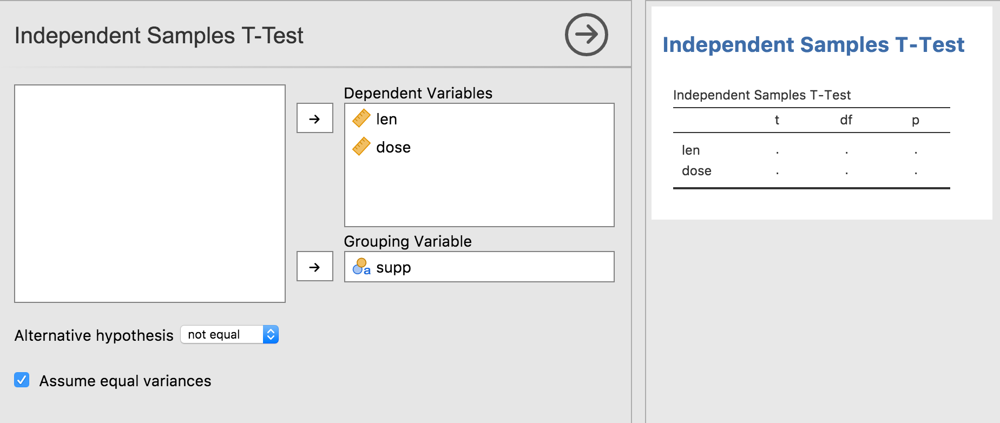

Dynamic Tables
Source:vignettes/dev.jamovi.org-master/tuts0201-dynamic-tables.Rmd
tuts0201-dynamic-tables.RmdIn the previous tutorial series, we looked at constructing and populating tables. The .r.yaml file contained:
...
- name: ttest
title: Independent Samples T-Test
type: Table
rows: 1
columns:
- name: var
title: ''
type: text
- name: t
type: number
- name: df
type: integer
- name: p
type: number
format: zto,pvalueThat is, the results contained a table called ttest with
the title ‘Independent Samples T-Test’, with 4 columns and 1 row.
In practice however, the number of rows in the table often isn’t fixed. They may vary based on the options the user has selected, or based on the results of the analysis itself. In this tutorial, we will concentrate on the former.
In the previous tutorial series, we created a t-test analysis. It allowed the user to specify a single dependent variable, and a single grouping variable. However, we could make this analysis more convenient by allowing people to specify multiple dependent variables. For example, a data set might contain the columns ‘gender’, ‘height’ and ‘weight’. By allowing multiple dependent variables, the user could specify ‘height’ and ‘weight’ as the dependent variables, and ‘gender’ as the grouping variable. Our analysis could then perform multiple t-tests (one for each dependent variable). The resulting analysis might look something like this:

The first thing we need to do is change the dependent variable in the
.a.yaml file, from Variable to Variables.
---
name: ttest
title: Independent Samples T-Test
menuGroup: SuperAwesome
version: '1.0.0'
jas: '1.1'
options:
- name: data
type: Data
- name: deps # <-- let's add an s
title: Dependent Variables # <-- and another s
type: Variables # <-- Variables with an s!
...NOTE there is currently a bug in jmvtools, where the UI is not updated appropriately. In this scenario, jmvtools should update the .u.yaml file to accept multiple variables, however this does not happen. It is possible to update the .u.yaml file by hand, but it’s generally easiest to simply delete the .u.yaml file, and let jmvtools create one from scratch. This is something which will be fixed in the coming weeks.
NOTE that you will have to shut jamovi down, and restart it in order to see changes to the analysis UI.
As we have changed the name and type of the dep
variable, our t-test will no longer work. For now, you should comment
out or delete the content of the .run() function of the
t-test analysis, otherwise it will produce a number of errors. We will
return to it later in this tutorial.
Having performed these modifications, your t-test UI should look something like:

As can be seen, multiple dependent variables can now be specified.
Now let’s return to our .y.raml file, to the rows value
in particular:
...
- name: ttest
title: Independent Samples T-Test
type: Table
rows: 1
...What we now want, is not 1 row, but rather 1 row per
dependent variable. If one variable is assigned to the option
deps, then we want the table to have 1 row. If two
variables are assigned to the option deps, then the table
should have two rows, etc.
The way we do this, is with what’s called ‘data-binding’.
Data-binding is where we ‘bind’ a particular property of a results
object, to an option. In this case, we want to ‘bind’ the number of rows
to the deps option. We do this be specifying the option
inside of parentheses (or brackets).
...
- name: ttest
title: Independent Samples T-Test
type: Table
rows: (deps)
...When bound in this way, the number of rows in the table always matches the number of variables specified by the user. Let’s reinstall our module and see this in action:

As can be seen, our table grows and shrinks accordingly. But we can
do one better. The first column should contain the variable name, and
although we can add this using the Table’s setRow()
function, there is a better way to do this. We can specify the
content of the column in the .r.yaml file.
The content in the .r.yaml file can be a string literal,
but it can also be a data-binding as well. When the rows of a table are
bound to an option, each row has a key associated with it. When bound to
an option of type Variables, each row’s key corresponds to
the Variable for that row. This allows us to bind the content of a
column, to each row’s key, as follows:
items:
- name: ttest
title: Independent Samples T-Test
type: Table
rows: (deps)
columns:
- name: var
title: ''
type: text
content: ($key) # <- here!$key is a special value which maps to the row’s key.
Make this change, and reinstall the module with
jmvtools::install(). As can be seen the first column is now
filled in appropriately.

Data-binding is nice, because it often leads to much simpler code. The .yaml files are able to take care of a lot of aspects of the results objects, and allows the R code (in the .b.R files) to be much simpler, and focused on performing the calculations. In computer science, this is called separation of concerns.
Now all we need do is add our analysis implementation to the .b.R
file. We can fill the table in using either the rowKey or
the rowNo.
.run=function() {
table <- self$results$ttest
for (dep in self$options$deps) {
formula <- jmvcore::constructFormula(dep, self$options$group)
formula <- as.formula(formula)
results <- t.test(formula, self$data)
table$setRow(rowKey=dep, values=list( # set by rowKey!
t=results$statistic,
df=results$parameter,
p=results$p.value
))
}
}We can now reinstall the module using
jmvtools::install() (Note that this analysis will not work
if you specify a nominal or ordinal variable as a dependent. So be sure
to either use a continuous variable, or change the type of the variable
to continuous before assigning it as a dependent. We will look at the
correct way to handle nominal and ordinal variables in the next
tutorial). You should have something like the following: